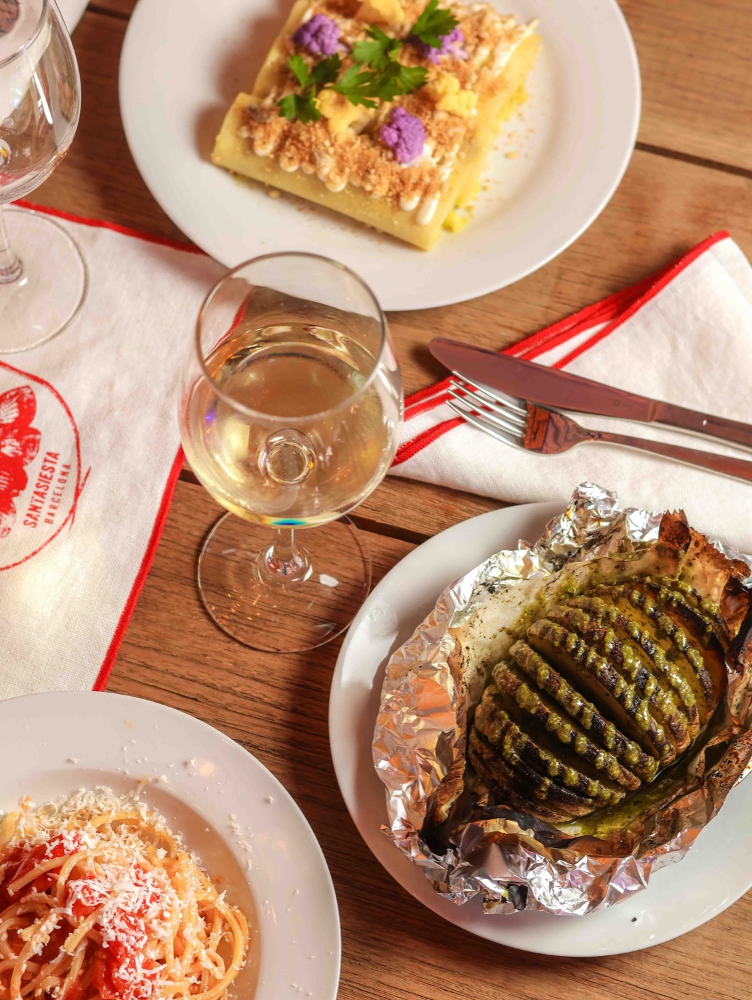

Conoce la casa
Así nació Bedda Madre.
Emmanuele Stevanato y el Grupo Dolcevita Gusto Italiano querían acercar a Castelldefels los sabores de otra región italiana. Tras su restaurante Número Diez, dedicado a Nápoles, eligieron Sicilia para crear Bedda Madre.
En la cocina está Gaspare Citarrella, un chef siciliano que prepara los platos de su tierra para compartirlos alrededor de una mesa.
El sabor empieza por el producto: pistacho de Bronte, ricotta, almendras, quesos y embutidos que llegan de Sicilia. Con ellos, cada comida se convierte en una buena excusa para quedarse un rato más.
